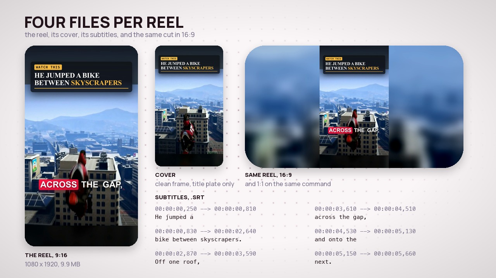
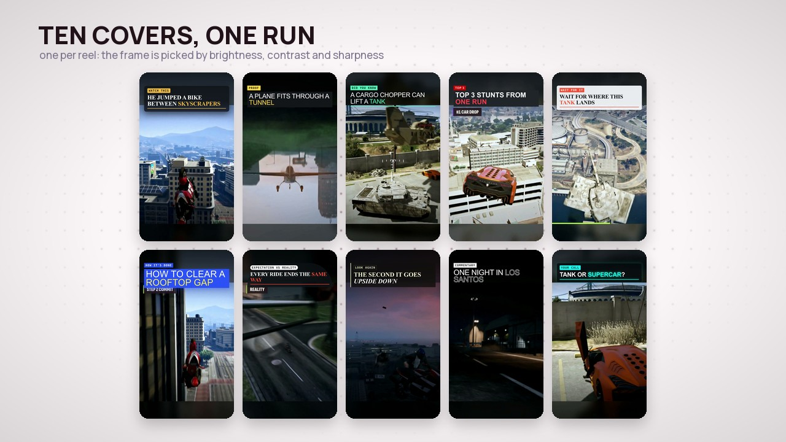

A workspace, not a plugin. Effects, rules, agents and commands wired so the edit builds itself.
The editor screen this page is promoted with, built from our own clips. The free set below makes the same screen from yours.
One thirty second clip went in. These ten came out, built by the same command, and all ten passed the gates. A type that does not have the material is refused with a reason you can check in the report.
Beat cut, talking head, head with effects, voiceover with word captions, a breakdown, a before and after wipe, a countdown, a reaction, the editor screen, and a hook loop. Ten files, one command, eighteen minutes. Each tile below is the finished file, playing at its own speed.
The headline plate and the subtitles are not drawn with pixels. They are a layer of HTML the browser renders over the cut, so the type is real type: proper fonts, glass, shadows, a word lighting up under the voice. Ten designs come with the box, and the whole batch changes design with one word in the scenario.
Same second of footage, same six words, ten looks. The plate carries the headline for the whole reel; the subtitles follow the voice word by word, so the reel reads with the sound off. Your own look is a theme in one stylesheet.

The vertical cut, a subtitle file platforms can read, a cover taken from a bright sharp frame with the plate and no subtitles, and the same reel reframed to 16:9 or 1:1. One command, no second pass.

Ten covers from the batch above. The frame is chosen by brightness, contrast and sharpness, and the plate is rendered over it clean, so the thumbnail is not a random still with a caption frozen mid-word.
The clip is read once and laid out on sheets: four frames per moment, what is said inside it, and why it is strong, a cut of the plan, a hit of sound, a face, a pause before the landing.
Ten moments become a scenario file: a headline, a line of voice and a format per reel. No moment, no reel. Nothing is invented about the footage.
A linter reads the scenario before the build and refuses dead headlines, empty praise and a line that only retells the plate. The rules are one page, written out.
One line in the scenario lays a bed under the batch. The track steps back where the voice speaks and comes back where it stops.
Sixteen parts in one folder. Each works on its own, and the ones next to it check its work.
One folder you drop next to your project. The pipeline runs offline on your own machine: Python, ffmpeg and Claude Code, no account and no key. A key is needed only if you take the paid path for voice and lip sync, and the free path covers both.
Four steps, one command: read, plan, build, accept.
Beat cut, talking head, voiceover, breakdown, hook loop and five more.
Twenty families. Every tile on this page is a real render.
Length, loudness, black frames, freeze, decode, quality, seams, repeats, titles on screen. They read the finished file, not the plan.
Eight rules you drop into your own CLAUDE.md.
Planner, writer, visual, analyst, reviewer. Five roles ship as templates; our own studio has grown to ten on top of these.
Build, review, check, wired to the pipeline.
An index, two worked examples and the rule for writing more.
Twelve steps from an empty machine to the first reel.
Ready chains: to the beat, house voice, talking head, quiet cut, ten by scenario.
Describe an effect, get a checked stub and a contact sheet.
Speech on your own machine, no key and no subscription. A turning head for the talking types. No lip sync and no presenter avatar: that needs a paid service and is not in here.
The clip on sheets: four frames per moment, what is said in it, and what makes it strong.
Real HTML titles over the cut. One word in the scenario redresses the batch.
An .srt file, a cover and the 16:9 or 1:1 cut, built beside every reel.
One reads your machine before the first build, one reads your text before the voice.
Twenty families of technique, 126 tiles, every one a real render. Inside a family the subject stays the same and only the technique changes, so you see a system instead of a pile of filters.
One subject, ten techniques, ten angles. Every tile is a real render, not a mock-up.
Punch-in, whip pan, spin, stretch, velocity blur, slit scan, grade, bloom. Eight ways to move the frame, all on the same subject.
Notes and clip cards falling through real perspective, lit by the angle of their own surface, focus falling off with distance. Every object is drawn by code.
A sphere of 2,200 particles, a cube in wireframe, a wave field, a torus, a helix, a tunnel. Forms that sit under any shot.
The timeline, cuts landing on the beat, the tool a skill picked, parameters the presets drive, gates reporting pass or fix, ten builds filling up. This is the work happening while you wait.
Bars, a watch-time curve, a ring, a number counting up, sparklines, a stack. Your own run fills in the numbers.
A word drives in behind the subject, text types itself, a line slams, titles stack, the subject shows through the letters, a ticker runs.
A frame splits into shards, drops to blocks, tears into colour channels, rewinds like tape, dissolves away from its background, and trails behind itself.
The same footage becomes a surface in space: it wraps a sphere, breaks into floating blocks, flips, rides the face of a cube, stacks into cards, and falls through the shot as notes.
Every technique run on a person rather than a still. The subject stays readable while the frame around them is taken apart.
A title sits behind the subject, a word slams into frame, and the panel on the right is the one that drives every number you have just watched move.
A graded look, color held on the subject while the world goes graphite, bloom, film grain with halation, duotone, and a wipe that puts graded and raw side by side.
A shock ring crosses the frame, the shot blows apart and reassembles, the air above it shakes, and the cut lands on a white flash. Six ways to hit a frame hard.
Push in, pan, dolly, orbit, a shake that decays, and the uneven drift of a hand. The corner of each tile draws the path the camera is taking.
The same take ramped, frozen, reversed, stuttered three frames at a step, slowed to a quarter and run at four times. The bar under each tile reads the speed.
The subject lifted off the background, outlined, keyed by brightness, keyed by colour, framed by a moving window, and followed by a box that holds the face.
Words light up on the beat they are spoken, captions sit where they do not fight the face, and the silent parts are found and taken out of the cut.
The waveform, the beat grid the cuts land on, music ducking under the voice, eight voices to pick from, and every stretch below the floor marked for removal.
A rim along the shoulder, a flare crossing the lens, rays through the frame, a glow on the highlights, a closing vignette and a shadow thrown on the wall.
The same shot framed vertical, square and wide, a cover built from the strongest frame, the export with its real numbers, and ten finished reels leaving the queue.
The only place where one shot meets another: a whip that drags the next frame in, a blur that falls into a point, a cut torn by noise, blocks, a cube, a strip of light.
The far plane put behind the near one: bokeh, two planes moving at different speeds, haze, focus crossing from the wall to the face, a shadow, a silhouette pushed into the frame.
One frame divided and repeated: a split of two moments, an inset close-up, a mirror, three strips of one turn, a window that leaves the rest dark, a tilt.
What the picture is made of, not what is in it: emulsion grain, tape, dust and hairs, paper fibre, uneven glass, and light bleeding around the bright parts.
The marks a finished reel signs itself with: a lower third, a stamp pressed into the frame, end titles, a watermark that stays out of the way, an end card.
Effects can be copied. A year of mistakes turned into code cannot. That is the part you are actually buying.
A gate catching a violation, skills loading themselves for the job, a task handed to an agent, a command unrolling into a chain. Every number here was counted in the repository, not estimated.
Code that refuses to let a rule slide. Claim a job is done without numbers and the answer never ships. Work in an area whose rules you have not read and the tool stays locked. A rule written in a document gets ignored. A rule written as a gate does not.
Frame by frame processing in twenty families: real perspective, light by surface normal, blur by speed, depth of field. Physics, not a flat filter.
Rules written from real mistakes. Each one says what happened, what is banned now, and how it gets checked.
Abilities that load themselves for the job: editing, type, copy, design, review.
Roles you hand a slice of work to: review, planning, analytics, visuals, copy.
Outside services wired in as tools: frames, voice, avatars, notes, browser, terminal.
Ready chains you pick by name: Voice At Home, Host On Subscription, Silent Cut.
One call unrolls into a chain of thirty-eight steps, and what the session learned lands in notes. Tomorrow does not start from zero.
You install three things by hand: Claude Code, Python and ffmpeg. Everything after that the box does for itself — it reads its own rules, pulls the tools it needs, writes the gates and reports what it found. You paste one block at a time and every block ends with a check that prints what should be on screen. About ninety minutes on a clean machine, and an hour of that is downloading.
Download, install, subscribe. Check: the version prints in your terminal.
The block writes the folder and the rules that load on every run.
ffmpeg, node, the environment, the libraries. Check: one command reads the machine and prints six blocks, every missing piece named before the first build.
The library and the presets. Check: a test reel builds from your own footage.
Editing, copy and design abilities. Check: the installed list prints.
Roles and their rules. Check: the review agent answers a test question.
The notes store and its index. Check: the first note exists.
Session review, knowledge dump, context reload.
An unusual check: break a rule on purpose and watch the tool block you.
Local or paid. Check: a test voice speaks on your own machine.
Seven ready chains. Check: the chain you picked runs end to end.
Drop in a clip, run one command, take the result. On a forty second clip with no speech you get six reels out of ten, and all six pass the gates. The other four are refused with a reason you can check.
The same workspace runs two ways. You choose by hardware and by budget, and you switch it in a setting.
| Job | What runs it |
|---|
Straight answer on hardware: the local path is built for an NVIDIA card. On an Apple silicon Mac some of it runs slowly through MPS and some of it does not run at all. The guide says which is which and what to do instead.
Not cut down versions of the paid one. Each does one thing and does it fully: drop in your video, run one command, take the file.
Cuts on the beat, a punch-in and a flash on the drop, money rain, mosaic with a rewind, a freeze-frame sticker, 3D cards and titles in Anton. Below is the first movik we cut, from the GTA 6 trailer.
The screen this product is promoted with, built from your own clip: six agent cursors working one timeline, a media pool, scopes and meters. Same command, same folder, no editor installed.
Two free sets work on their own, without payment and without an account. The box is the whole workspace.
Two tools that run on their own and need nothing else.
The whole workspace: sixteen parts in one folder.
Python 3, ffmpeg and Claude Code. That runs on macOS, Linux and Windows alike; everything renders on the processor, so no graphics card is required. One thirty second clip became all ten types in eighteen minutes on a laptop. Our own runs are on macOS, so that is the path we can vouch for line by line.
No. The pipeline, the effects, the titles and the gates run offline, and the voice is 54 local ones, no key. Paid services are for growing the thing, not for starting it: HeyGen for avatars when your machine has no graphics card, ElevenLabs for a cloned voice, Higgsfield for generated footage. The box explains how to wire each one, and the table above lists the free counterpart for every tool.
Six of the ten types build anyway. The four that need speech are refused with the reason printed in the report, so you can see what was missing instead of getting a broken file.
Yes, within what the box can do. Replace the turning head with your own five second turn and the talking types use it. The voice is one of 54 that speak on your machine; a cloned voice needs a paid service.
No, and we would rather say so here than in the folder. The box has a turning head cut to the length of the speech, not a mouth moving to the words. Lip sync needs a paid service, so the box tells you how to wire HeyGen if you want one. Everything else in here runs without an account.
You and Claude Code, from what the storyboard shows. The box carries the rules for it on one page and a linter that reads the scenario before the build: dead headlines, empty praise and a voice line that only retells the plate are refused with the count, so slop does not reach the render.
Anyone else's footage, and anything that needs a subscription to work at all. There is no cloud account, no licence server and no call home: the folder sits next to your project and runs there.
Try the two free sets first on your own clips: they run the same pipeline and the same gates, so what comes out of them is what the box does. If it still does not fit, the refund runs for fourteen days and you keep what you rendered.